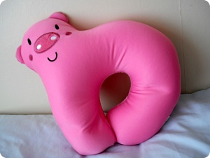
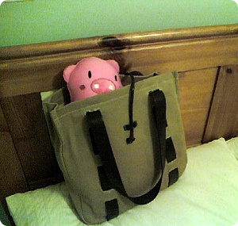

전에올렸던 요 Piggy

정체는 목쿠션 케케케
장시간비행에 요거없인 몬삽니다 ㅡㅜ
요즘 핑크색 소품들이 왤케 귀엽지;;;
나이들면서 취향이 거꾸로가는듯^^;;;

C군네 집에서 데려왔음
얘가 이걸 너무좋아해서 내꺼 돌려받는데도
워쩐지 미안했다능^^;;;;;;
가방에 넣었더니 얼굴만 빼꼼 ㅋㅋㅋㅋㅋ
저러구 지하철타고 돌아왔습니당 ;)
2시간후 저능 빅토리아역으로 연이아가씨 만나러 갑니다~
낼 아가씨 한국돌아가기전에
브라이튼 연이집에서
연이 + 한국서온 연이칭구 + 나
여자셋이서 신나게 수다나 떨랍니다//희희희
+
아가씨가 두고가는 생필품등 잡다구리한걸 노리는 하이에나모드 ㅎㅎㅎㅎ